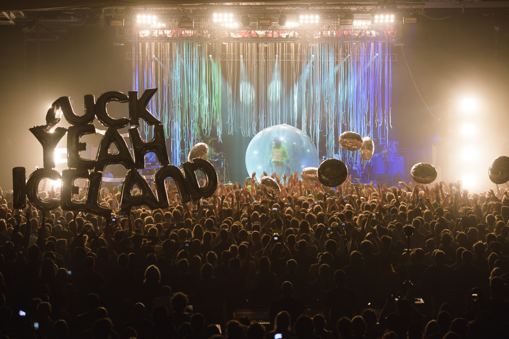

Iceland Airwaves 2016
Iceland Airwaves has come a long way since its inception in an airplane hangar at Reykjavík Airport. Nowadays the festival is regarded as the biggest celebration of music in Iceland and boasts an unrivalled line-up of established and up-and-coming artists. From concerts in tiny record stores and art museums to cool bars and beautiful churches, Airwaves-goers can expect to soak up the festival atmosphere in some of the city’s most unique venues. And it’s not just about the music; there will be plenty of opportunities to indulge in yummy Icelandic cuisine, sample the local beer, make new friends, relax in the hot pools and marvel at the aurora borealis. There’s a reason music lovers flock to Reykjavík from all over the world, so come and join us (and them!) for 5 days of festival magic.
THE LINEUP
The festival will be featuring 200+ artists, both local and international, like:
- Epic Rain
- Of Monsters and Men
- PJ Harvey
- Sigmund
- Amnesia Scanner
INFO
When?
Nov 2-6, 2016
Where?
Reykjavik, Iceland
Price
19.900 KR (2.33 USD). Buy your tickets here.
Don't live in Iceland?
You can buy a travel package. (Tickets included)